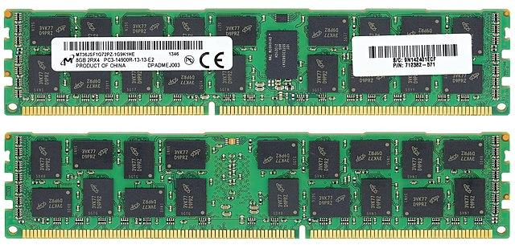

BytesOfProgress
Wiki
RAM (Random Access Memory)
Random Access Memory (RAM) is a crucial component in a computer system that plays a key role in providing temporary storage for data and program code that the processor actively uses. Unlike long-term storage devices such as hard drives or SSDs, RAM is volatile, meaning it loses its stored information when the power is turned off.
This high-speed, temporary storage allows the processor to quickly access and manipulate data, significantly improving the system's overall performance. RAM is essential for running applications and multitasking.
It's job is to efficiently managing the flow of data between the processor and storage devices. The capacity and speed of RAM can impact a computer's ability to handle complex tasks and run multiple programs simultaneously.
This is what a RAM Module looks like:
DDR3 RAM-Module
Note: Laptop RAM is different from the regular computer RAM when it comes to form-factor, but on the technical site, they work similar.
Different generations
DDR, DDR2, DDR3, DDR4 and so on refer to different generations of Double Data Rate Synchronous Dynamic Random Access Memory (DDR SDRAM), which is a type of RAM technology used in computers and other electronic devices. Each generation represents an advancement in memory technology, offering improvements in speed, bandwidth, and energy efficiency. Here's a simple overview of them, as of writing this in the year 2024, the newest generation of RAM is DDR5.
DDR (DDR1): The first generation, Double Data Rate Synchronous Dynamic Random Access Memory (DDR SDRAM), introduced in the early 2000s. DDR RAM was a significant improvement over the preceding Single Data Rate (SDR) RAM, as it could transfer data on both the rising and falling edges of the clock signal.
DDR2: The second generation, DDR2 SDRAM, brought further improvements in speed and efficiency. It was introduced around 2003 and featured higher data transfer rates and lower power consumption compared to DDR.
DDR3: DDR3 SDRAM, introduced around 2007, continued the trend of increased speed and efficiency. It offered higher data transfer rates and lower power consumption compared to DDR2. DDR3 RAM became standard in many computers during its time.
DDR4: DDR4 SDRAM, introduced around 2014, marked another leap in performance and energy efficiency. DDR4 RAM modules provide higher data transfer rates, increased capacity, and improved reliability compared to DDR3. DDR4 has become the standard in modern (2024) computers.
DDR5: DDR5 is the latest generation as of writing this (2024). Introduced around 2020, DDR5 SDRAM brings further improvements in data transfer rates, power efficiency, and overall performance compared to DDR4. DDR5 is expected to become more prevalent as technology advances.
Each successive generation of DDR SDRAM offers advancements in speed, capacity, and energy efficiency, making them suitable for different computing needs and applications. When upgrading or building a computer, it's crucial to ensure that the motherboard supports the specific DDR generation you plan to use, as they are not backward compatible.
SRAM / DRAM
DRAM (Dynamic Random Access Memory)
DRAM is the kind of RAM, which you find in your typical PC or Workstation. It uses tiny capacitors to store data, but it needs to refresh them thousands of times per second to keep the information intact.
When it comes to speed, it is a slower than SRAM because of the constant need for refreshing, but newer versions have improved speed.
DRAM is the primary memory used as the main working space for your device. When you run programs or open files, the data is loaded into DRAM for quick access by the processor.
Capacity-wise, DRAM provides a larger storage capacity compared to SRAM, making it suitable for handling the numerous tasks and data requirements of modern applications.
DRAM enables your device to run multiple applications simultaneously, allowing you to switch between tasks seamlessly.
SRAM (Static Random Access Memory)
Construction: SRAM uses a kind of memory cell called a flip-flop, which can hold onto data without needing constant attention.
Size: Because of its design, SRAM is more complex and takes up more space on a chip compared to DRAM.
SRAM doesn't need to constantly refresh its memory cells like DRAM does. This lack of refreshing makes SRAM faster but also contributes to its higher cost and complexity.
Cost: It's more expensive to make SRAM, so it's typically used in smaller amounts for critical tasks (such as CPU Caches) rather than as the main memory in a device.
Aside from CPU caches, SRAM is also used in certain high-performance applications, such as networking devices and high-speed buffer storage.
SRAM tends to consume more power compared to other types of memory due to its continuous power usage, which may impact the overall energy efficiency of a device.
ECC RAM
ECC stands for Error-Correcting Code, and ECC RAM is a specialized type of computer memory that has additional error-checking functionality, including parity.
The primary purpose of ECC RAM is to detect and correct errors that may occur in the stored data due to various factors such as cosmic radiation, electrical interference, or other sources of memory corruption.
The term "parity" refers to an additional bit added to each byte of data stored in ECC RAM. This parity bit allows the memory to detect single-bit errors in the stored data. In the event of a detected error, ECC RAM can automatically correct the error, ensuring the integrity of the data.
In ECC RAM, each byte (8 bit) of data is accompanied by an extra bit called a parity bit. The parity bit is calculated based on the number of set (1) bits in the data byte, and its purpose is to ensure that the total number of set bits (including the parity bit) is either even or odd.
There are two types of parity: even parity and odd parity. In even parity, the parity bit is set to make the total number of set bits (including the parity bit) even. In odd parity, the parity bit is set to make the total number of set bits odd.
But how does it detect an error?
During the writing of data to memory, the parity bit is calculated and stored along with the data. When the data is read, the memory controller recalculates the parity based on the received data.
If the calculated parity does not match the stored parity, it indicates a single-bit error in the data.
The memory controller can determine which bit is in error by comparing the calculated parity with the stored parity. The faulty bit is then corrected, restoring the accurate data.
Benefits of ECC:
ECC RAM provides a higher level of data integrity by not only detecting but also correcting single-bit errors. This automatic error correction capability is particularly crucial in mission-critical applications where data accuracy is of great importance.
The famous Super Mario bit-flip incident
In 2012, a speedrunner named Pannenkoek2012 was attempting to complete a mission in Super Mario 64 with certain constraints. During this attempt, a phenomenon occurred where a single bit in the game's memory, specifically in the non-ECC RAM of his device, flipped unexpectedly.
View original clip
This event was attributed to a cosmic ray-induced single-bit flip, a rare occurrence but theoretically possible due to the vulnerability of electronic devices to high-energy particles from space. Cosmic rays can interfere with the normal operation of electronic components, leading to errors like bit flips.
Pannenkoek2012 documented and analyzed this incident in a series of videos, and the community found it fascinating. While it wasn't an intentional manipulation or cheat, it showcased the vulnerability of electronic systems to external factors like cosmic rays. The incident became well-known in the speedrunning community and among fans of Super Mario 64.
ECC RAM's error-detection and correction features could have potentially prevent the impact of a cosmic-ray-induced bit flip, preventing or minimizing glitches and errors.
back